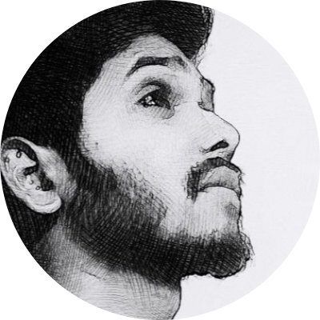

|  |
HRITIK GUPTA
co -founder of docccita,
software developer &
life mentor |
i am a computer science student doing my btech from kalinga institue of industrial technology bhubaneswar,i am also working on my startup in which we are developing a software which is going to problem solving product for healthcare industry along with this launching our product with having a fast growing idea.
along with this currently i am developing my more usefull skills and i 💚 to sing and mentor,and making assets
My Education
- i had done my high school from dps satna ,and during my 11th and 12th class i had prepared for jee advance (a exam which is mode of taking the addmission on iit's ,nit's,iiit's and other goverment colleges in india
- ,but unfortunately i was not able to cleared that then i take a drop for one year and again prepared at indore and qualifies my exams-,
- and got admission on one of the most prestigious college of india(KIIT),
- and here i am doing my btech in computer science and currently i am i second year.
- i had learned c,c++,dsa,and web dev,and continuing to learn
My Hobbies!..
- singing,entrepreneurship,and business management is my one of the most favourite passion
- other than this i love reading book,learning leadership and business skill
- i love to play tt,badminton&always excited to watch cricket
contact details
Work Experience
| date |
work |
| 2016-2018 |
i had prepared for iit at kota |
| 2018-2019 |
i had taken drop and again prepared for iit at indore |
| 2019-present |
i am doing my b-tech in computer science at kiit |
skills
| bootstrap |
🌟🌟🌟🌟 |
ruby |
✰✰✰✰✰ |
| c language |
🌟🌟🌟🌟 |
marketing operations |
🌟🌟🌟 |
| dsa |
🌟🌟🌟 |
web dev |
🌟🌟 |
| daa |
🌟🌟🌟🌟 |
speaking |
🌟🌟🌟 |